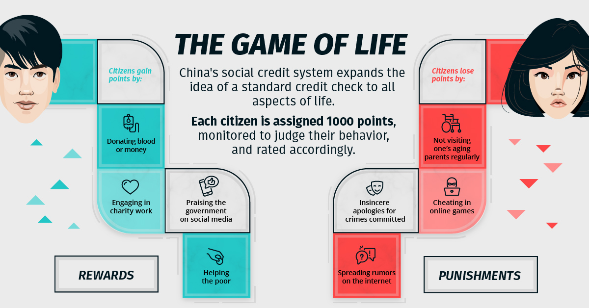

In todays world the internet is commonplace, it is everywhere from up high in space down to nanobots. Almost anyone in the world can communicate with anyone just with the click of a button. Up until this point the internet has been relatively unsecure, as there was nothing "important" stored on the internet, however, this is the start of the digital age, an age in need of secure technologies and platforms to protect people from cyber-attacks and surveillence.
Privacy and security concerns are growing each day with 0-day exploits (new unknown exploits) being found and used for malicious purposes and a new age of computer hackers, but even with all this the amount of cybersecurity awareness is still very low with the most common password in 2020 being 123456 (2020, Shibu. Sherin). There are some people promoting cyber-awareness and online privacy such as Rob Braxman Tech. In this age we need more people like this to help educate everyone on why cybersecurity and privacy is important.
A main concern for privacy is China's surveillence state. China is renowned around the world for having
constant surveillence over all their citizens
and keeping a social score on everyone. This social credit score an also be used to prohibit citizens from
leaving the country. An example of some things
that can decreace social credit score are: Eating on Bejing's rapid-transport system, Cheating in online
video games, Jaywalking and if a pedestrian or moped driver commits 5 or more
traffic violations (Jaywalking, Red-light running) their personal information may be displayed publicly on
billboards at traffic lights.
According to a help bot
on the Chinese social credit system website (2021), "The social credit system refers to the general term for
a series of arrangements to promote the credit commitments
of all parties in society, including institutional arrangements, credit information recording, collection
and disclosure mechanisms, institutions and market
arrangements for collecting and publishing credit information, regulatory systems, and publicity. The
ultimate goal of various aspects such as educational
arrangements or various small systems is to form a good social credit environment.".

The main goals of the Social Credit system are: "The main goals
of the social credit system are: by 2020, the basic laws, regulations and standard systems for social credit
will be basically established, the credit
information system covering the whole society based on the sharing of credit information resources will be
basically completed, the credit supervision system
will be basically sound, and the credit management system will be basically complete. The service market
system is relatively complete, and trustworthy
incentives and untrustworthy punishment mechanisms are fully functioning. Significant progress has been made
in the construction of government integrity,
business integrity, social integrity, and judicial credibility, and market and social satisfaction has
increased significantly. The whole society's awareness of
integrity has generally increased, the credit environment for economic and social development has improved
significantly, and the economic and social order has
improved significantly."